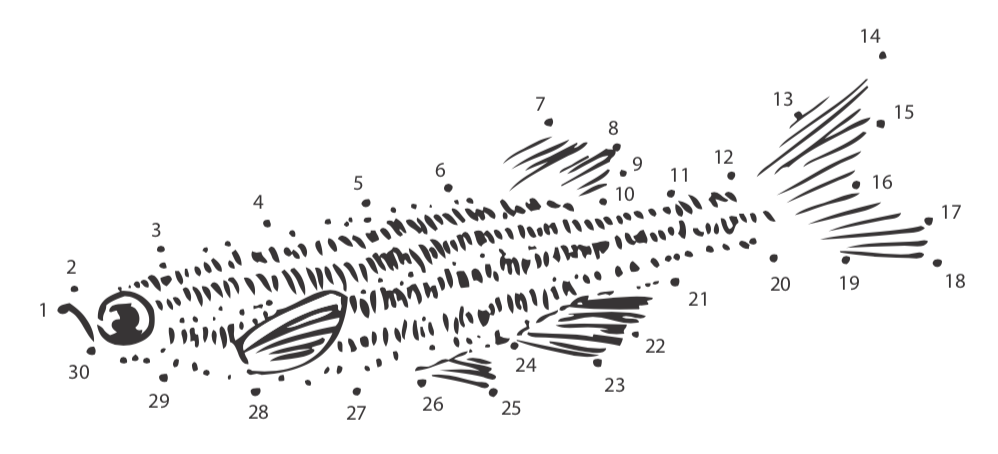

Cell fate and patterning
We investigate how embryonic cells interpret developmental signals and establish distinct transcriptional identities.
Developmental & Systems Biology
We study how cells make decisions, coordinate their behavior, and build functional tissues during vertebrate development.
Our lab is interested in the genetic control mechanisms that underlie embryonic development. Specifically, we ask how cells adopt different fates and how those decisions lead to changes in cell shape, movement, and tissue organization.
These processes — specification and morphogenesis — act in concert, but how differentiating cells coordinate gene regulatory state with physical behavior remains a central question in developmental biology.

We use zebrafish embryos as a model system and combine quantitative imaging, molecular perturbation, genomics, and computational analysis to understand how robust developmental programs emerge.
We investigate how embryonic cells interpret developmental signals and establish distinct transcriptional identities.
We ask how gene regulatory programs are coupled to cell movement, tissue organization, and organ formation.
We study cis-regulatory mechanisms that control developmental gene expression in space, time, and cell type.
Teaching is an important part of our mission. Through the Biology major and the Quantitative and Systems Biology graduate program, we contribute to education and training in developmental biology, molecular biology, genome engineering, and scientific research at UC Merced.
We are part of the Molecular & Cell Biology Department at UC Merced. We are affiliated with the Quantitative and Systems Biology graduate program, the Health Sciences Research Institute, and the Center for Cellular and Biomolecular Machines.